Performance & Attribution
We recommend logging into ODIN while you work through the tutorial. odin.opturo.com/ODIN/ODIN_LandingPage/index.html
Performance & Attribution Features
Key Features:
- Ability to drill down into calculations and export data to Excel or CSV
- Interactive charts and data visualizations to analyze performance and attribution
- Batch reporting can be set for daily or monthly reporting
Getting started
Logging In
Log in to your ODIN account. You may have been provided a link that doesn't show an entity code. If so, just enter the User Name and Password provided to you.
If you are unsure of your credentials or experiencing problems logging in, please reach out to Opturo support.
Once you successfuly login, you will see the ODIN platform and the applications you are permissioned to use. Select Performance & Attribution.
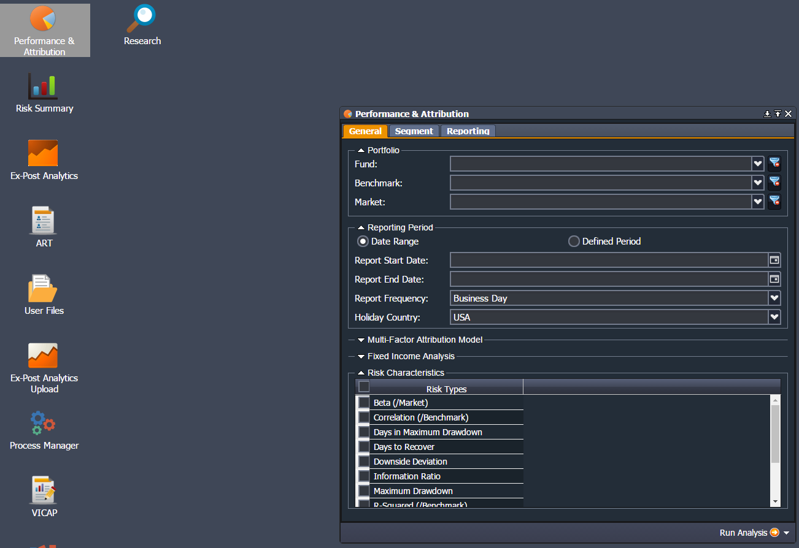
Generating Reports
The Performance & Attribution application is an interface for running performance & attribution reports given the user's fund and benchmark data. The settings that will be described below give the users powerful analytics and tools to drill down into their data.
In this section, we explain how to select the settings for a report and generate it.
General Settings
The first tab in the application is the General settings tab. These settings are used to select the fund/benchmark/market you would like to analyze, as well as the time period for your report. There are additional settings that will be covered in the following section.
Portfolio
- Fund: Select a fund from the list of available funds. Use the tree display to find the fund you are looking for.
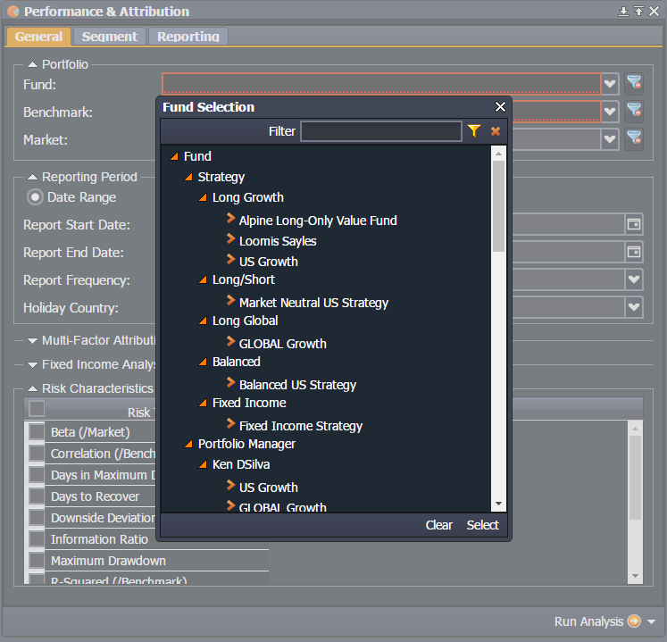
- Benchmark: Select a benchmark from the list of avaiable benchmarks. Be sure that there is benchmark data available for the same time period as the fund.
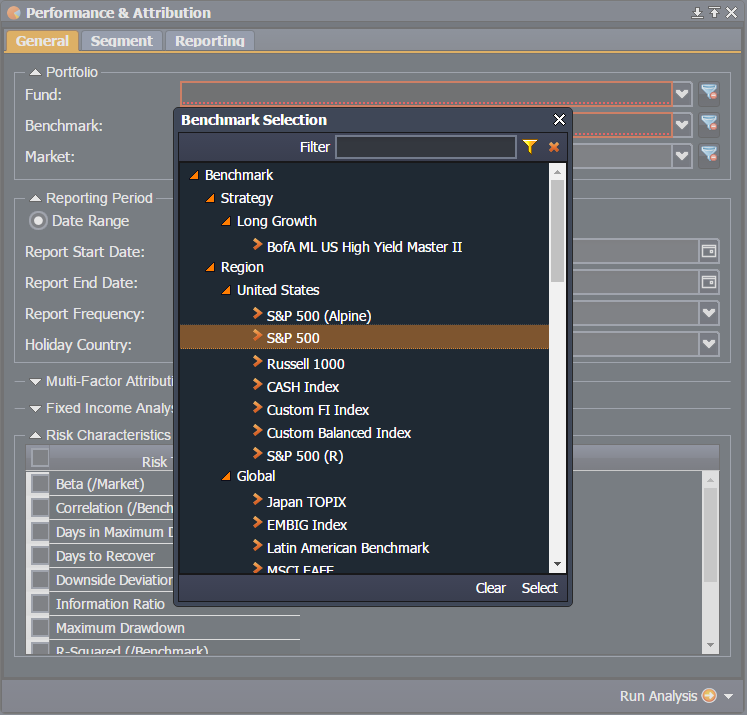
- Market: Select a market from the list of available markets. We recommend selecting the same benchmark as you did in the Benchmark dropdown.
Reporting Period
The Reporting Period section is used for selecting the date range and frequency of the report you want to produce. Use the Date Range button and select a range in which there is fund and benchmark data.
- Report Start Date: Enter the starting date of the report by entering a date, or using the calendar dropdown.
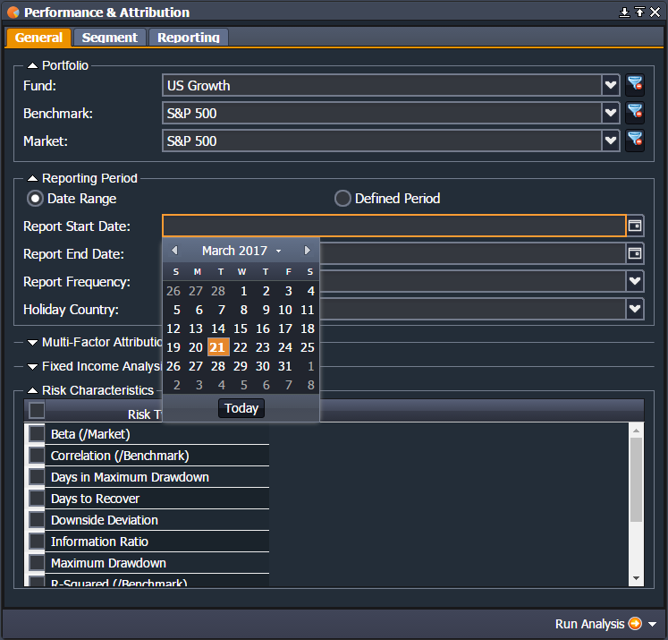
-
Report End Date: Enter the end date of the report by entering a date, or using the calendar dropdown.
-
Report Frequency: Select the appropriate frequency of the data used in the report. If you have provided monthly holdings and market values, you will use Monthly. If you have provided daily or business day frequency, then you will select the respective frequency.
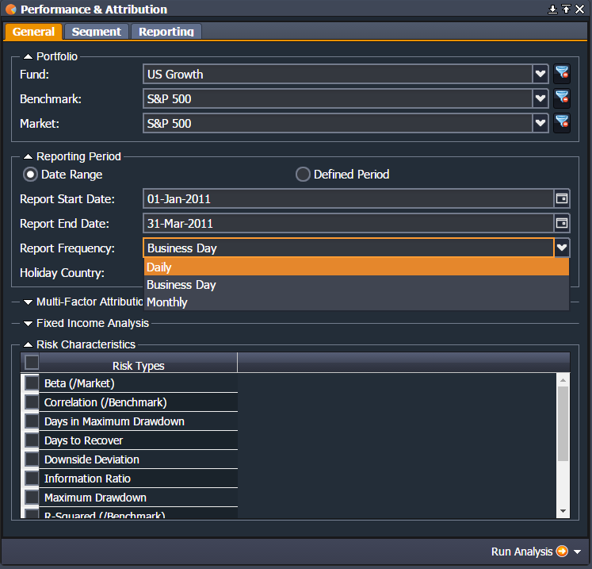
- Holiday Country: If your data has gaps in it's holdings on certain holidays, then select the country which adheres to those holiday conventions. If your data does not have holiday gaps, select None.
Multi-Factor Attribution Model
This section is under development.
Fixed Income Analysis
This section is under development.
Risk Characteristics
These are list of available risk statistics that can be included in your report. Click the checkbox next to Risk Types to select all risk statistics.
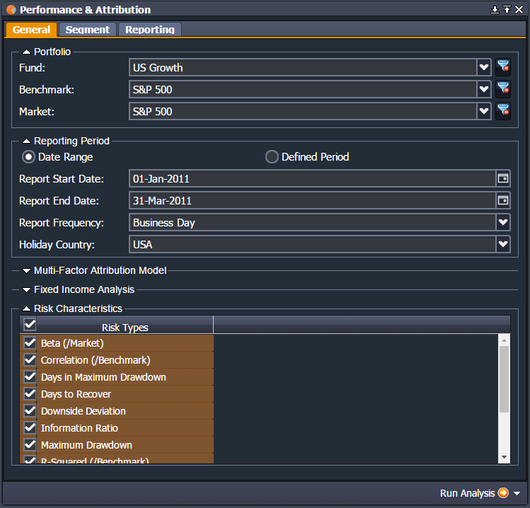
Segment Settings
The second tab in the application is the Segment settings tab. These settings are used to segment performance given the chosen fields. There are also decision attribution options if you're data has been configured to run attribution.
Cascading Decision Tree
This tree format lists the available segments that can be used in your performance & attribution report. There can be both discrete and continuous segments depending on your configuration. Use your mouse to drag the desired segment into the Segment Selections box.
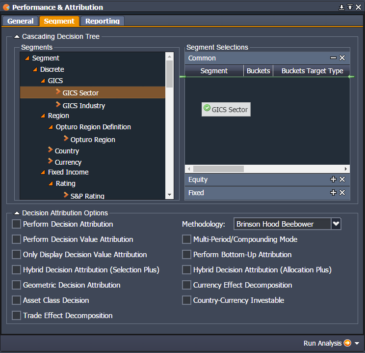
Segment Selections
Users can reorder the segments using their mouse to change the order of the segments shown in the reports. This is important when thinking about decision attribution and the order your investment decisions. Use the delete key to remove segments.
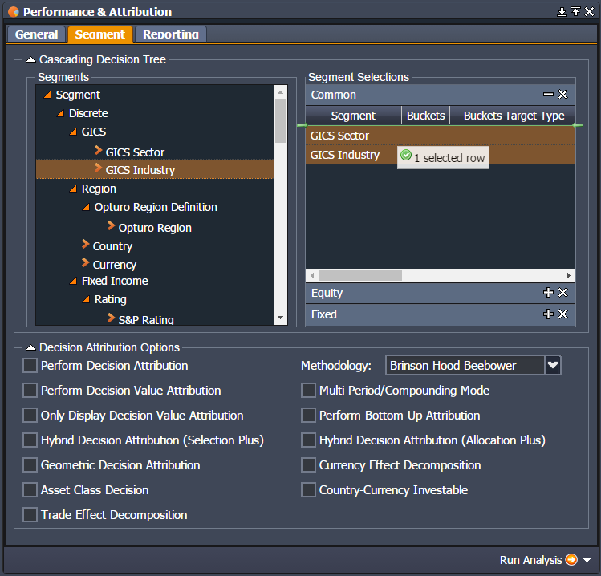
Decision Attribution Options
These options are used for controlling the type of Decision Attribution you would like calculated. For basic decision attribution, given the segments selected, check the Perform Decision Attribution box.
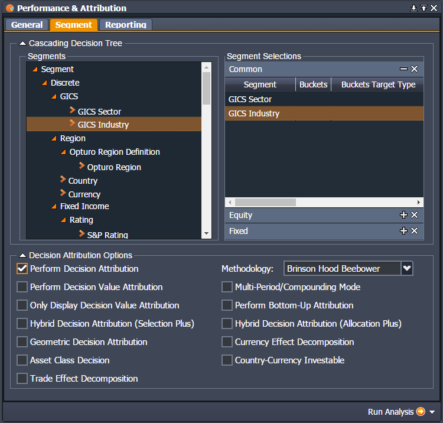
Reporting Settings
The third tab in the application is the Reporting settings tab. This tab is used to control the appearance of the report, and toggle on/off certain functionality of the report. Users do not change these settings often, and many settings can be specific to the configuration of your data.
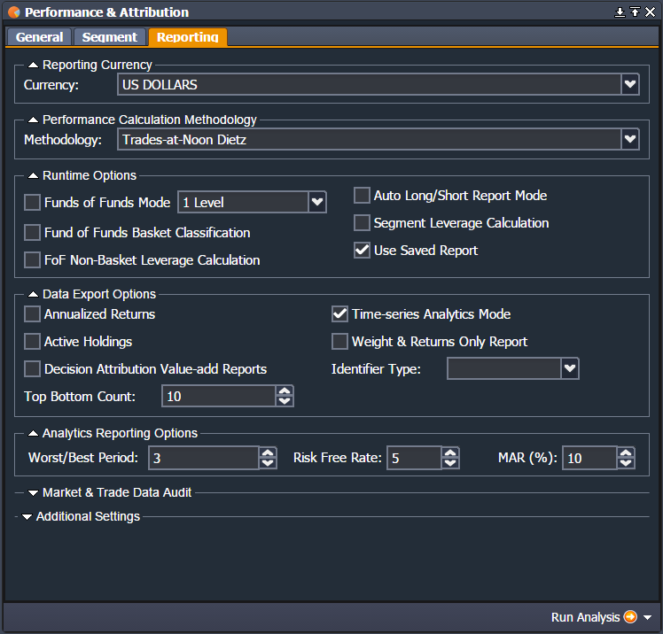
Reporting Currency
Select the currency used in the report from the dropdown.
Performance Calculation Methodology
Select Buy & Hold if your data does not have any transaction or flow data. Use the other methodologies if you have transaction data. For more information, request documentation from Opturo support.
Runtime Options
These are special settings used for certain configurations. If you are unfamiliar with the settings in regards to your data, you probably don't need to use them.
Data Export Options
- Annualized Returns: Select this box to annualize the returns in the report.
- Time-series Analytics Mode: Select this box to allow drill downs into the time series of each security in the fund and benchmark.
- Weights & Returns Only Report: Select this box if you only want the report to have weights and returns. We recommend unselecting this to give full data insights.
Analytics Reporting Options
This section is under development.
Market & Trade Data Audit
Click the Enable Audit check box to run the report directly from the database. We recommend leaving this unchecked, so the report will run faster from the cache.
Additional Settings
Here we can define custom settings for the report for each client.
Saving & Loading a Report
Users can save the settings they've selected, so that the same report can be run the next time they log in. Use the dropdown menu in the Run Analysis button to save the settings.
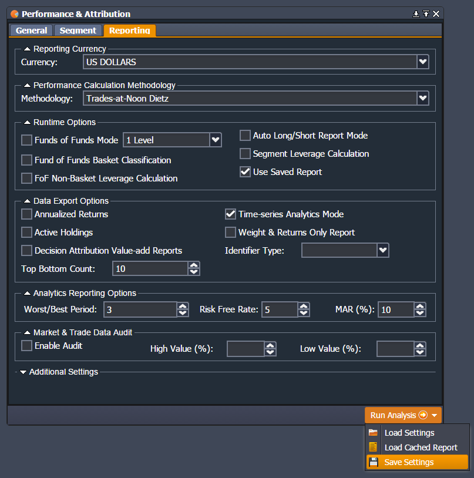
Enter a report name, and select Load at Start if you'd like these settings to be loaded when you first open the Performance & Attribution application.
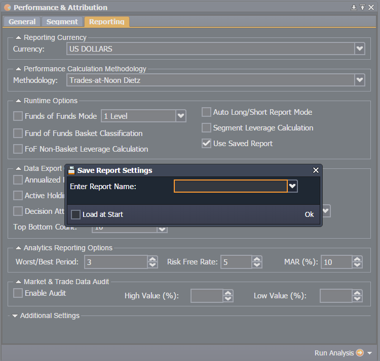
When you want to load other saved settings, select Load Settings and select the report you saved.
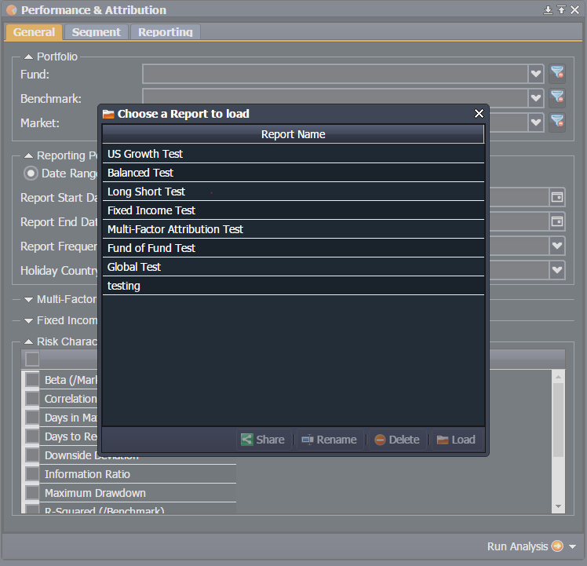
Running a Report
After you are satisfied with your settings you have selected, click the Run Analysis button in the bottom right of the application.
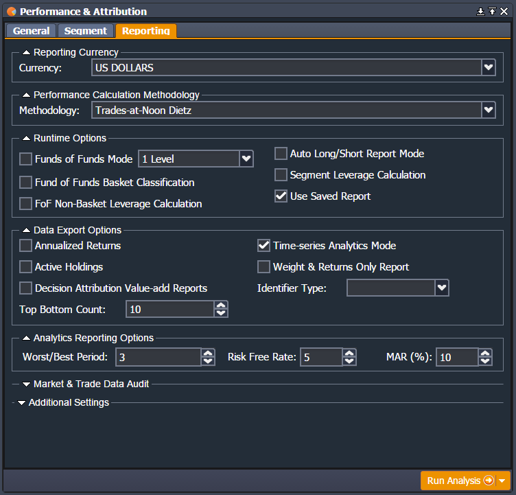
Viewing the Report
After you have selected Run Analysis and the process has finished running, you should see a new window with the fund and benchmark name, as well as the time period of the report. The entire report is exportable to Excel by clicking on the View Reports dropdown in the lower right, and selecting Opturo Excel Report.
Executive Summary
The Executive Summary page gives statistics on the cumulative returns of the fund and benchmark over the selected time period. There are also many other useful statistics to analyze the time period.
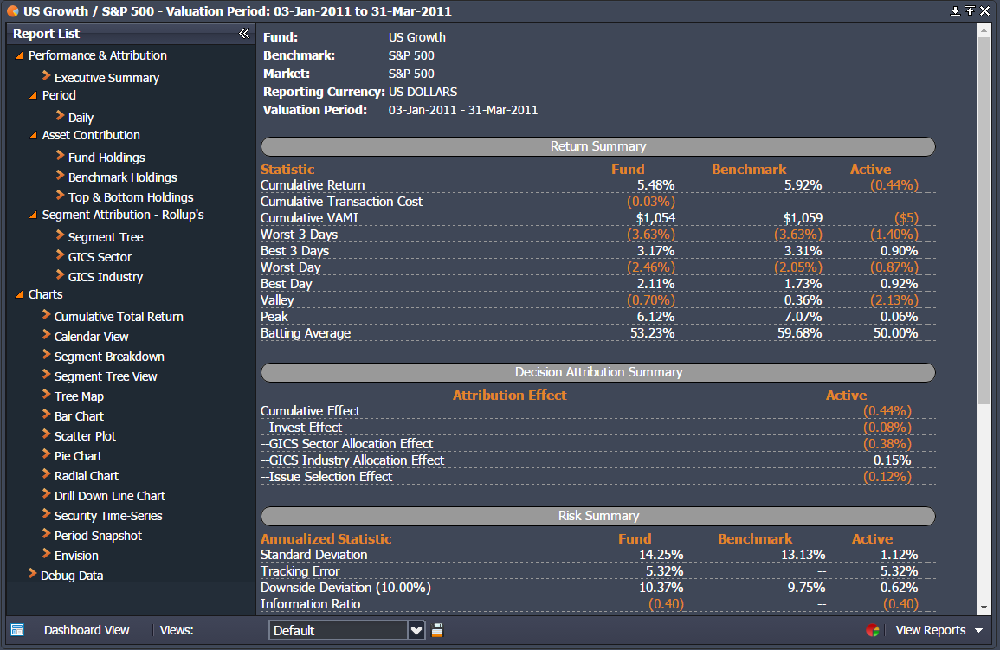
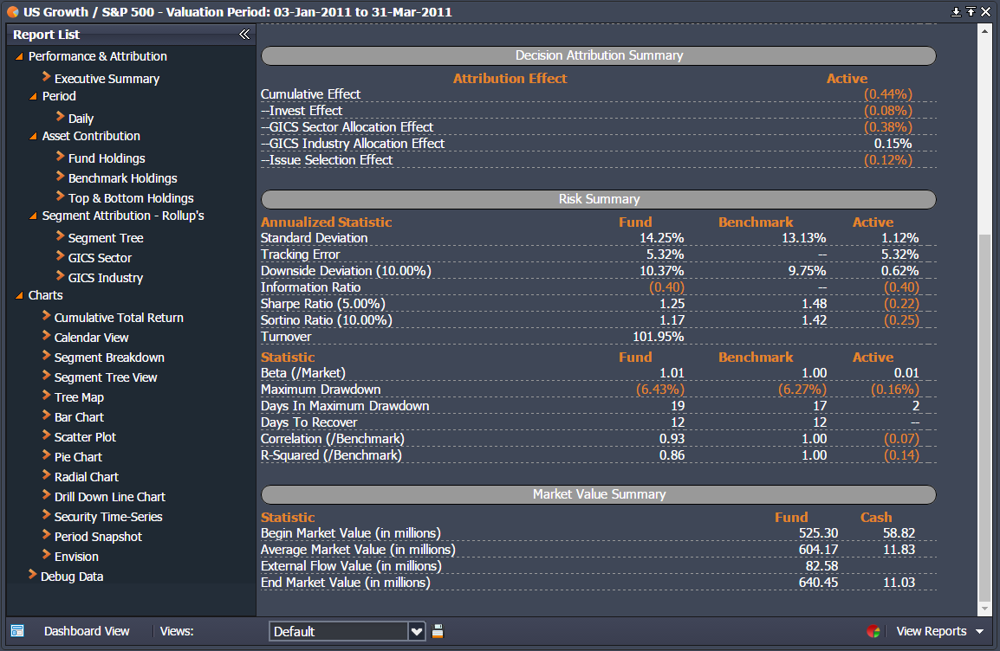
Period
This page will be called Daily or Monthly depending on the frequency of your data. This lists the returns, market values, contributions, among other things, for each date in the time period.
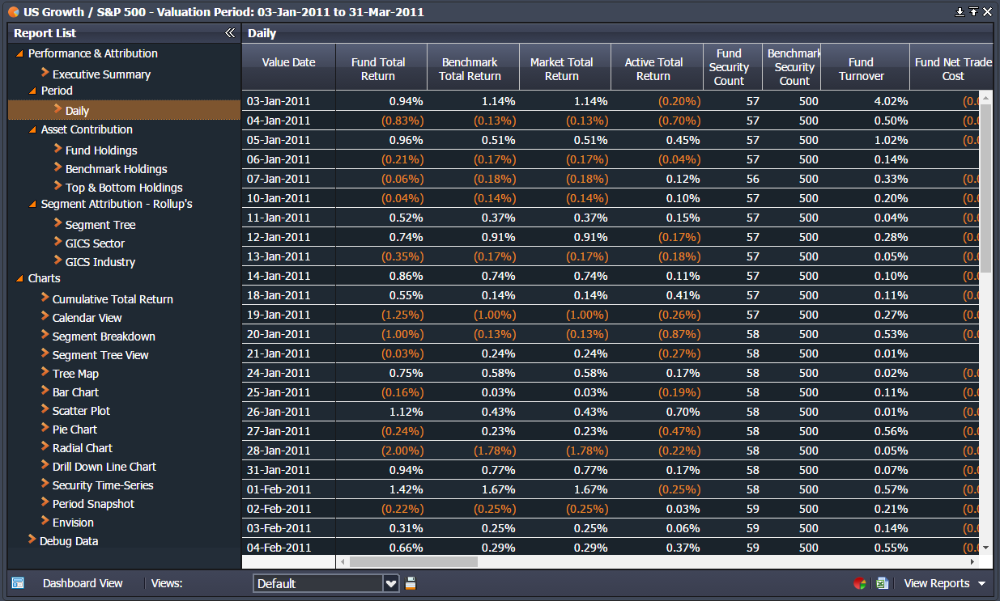
You can export this spreadsheet to Excel by selecting the Excel Icon in the lower right.
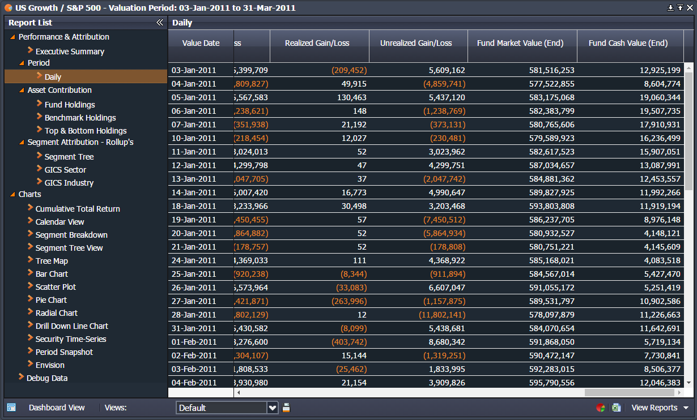
Asset Contribution
This section is under development.
Segment Attribution - Rollup's
This section is under development.
Charts
This section is under development.
Debug Data
This section is under development.